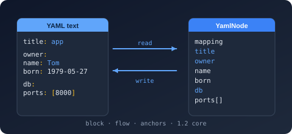

Bodu.Text.Yaml

Bodu.Text.Yaml is a library for YAML, the indentation-structured document format. It is the third member of the Bodu serializer family, alongside Bodu.Text.Toml and Bodu.Text.Bencode. It keeps the family architecture — a static serializer façade, a mutable DOM, a read-only DOM, and a low-level reader/writer pair — and the shared Bodu.Text.Serialization attribute family, naming policies, serialization callbacks, converter attributes, and converter factories. On top of that, YAML adds its own presentation richness. This page covers what is specific to YAML.
The format in one paragraph
YAML is a text format built around indentation rather than brackets: a mapping is a block of key: value lines, a sequence is a block of - item lines, and nesting is expressed by indenting. It also offers a flow form ({a: 1}, [1, 2]), quoted and block scalars, comments (#), reusable anchors (&a) and aliases (*a), document directives (%YAML, %TAG), and multi-document streams delimited by --- and .... Bodu.Text.Yaml implements the Bodu YAML Core Tree Profile: a YAML 1.2 core-schema, JSON-compatible tree where mapping keys resolve to unique scalar strings, anchors are unique and acyclic (resolved transparently on read), and tabs are rejected as indentation.
The node and value model
Under the surface presentation, every YAML document is a tree of three node shapes — a mapping (key/value pairs), a sequence (an ordered list), and a scalar (a single value). The scalar resolves to one of the core kinds the profile recognises, surfaced as YamlValueKind:
| Kind | YAML | Example |
|---|---|---|
Mapping |
block or flow mapping | host: localhost |
Sequence |
block or flow sequence | - a / [a, b] |
String |
plain, quoted, or block scalar | name: Ada |
Integer |
integer scalar | port: 8080 |
Float |
float scalar | ratio: 1.5 |
Boolean |
true / false (plus 1.1 forms) |
enabled: true |
Null |
the null scalar (null, ~, or empty) |
value: |
The same kinds drive the token stream (YamlTokenType) that the reader and writer exchange.
Presentation is resolved, not stored
YAML carries presentation information a JSON-style tree does not. Bodu.Text.Yaml resolves it on read and chooses it on write rather than exposing each variant as a distinct value kind:
- Scalar styles — plain, single- and double-quoted, literal (
|) and folded (>) block scalars. The five presentations plus theAny"writer chooses" sentinel are enumerated by YamlScalarStyle; ScalarStyle records the original style of a parsed scalar (and reportsAnyfor a non-scalar node). Block scalars carry a chomping indicator —Clip/Strip/Keep— modelled by YamlBlockChomping. - Block vs. flow — the writer emits block-style collections for readability, falling back to flow
[]/{}only for empty containers, and writes a scalar plain unless plain rendering would change its meaning, in which case it double-quotes and escapes. There is no public scalar-style control on the write path. - Anchors and aliases —
&adefines an anchor,*areferences it; the reader resolves aliases transparently into the composed tree (they must be unique and acyclic, or a YamlFormatException is raised).
Spec versions: 1.2 core, opt-in 1.1
Parsing defaults to the strict 1.2 core schema, where only true / false are Booleans — this sidesteps the well-known "Norway problem", in which YAML 1.1 silently reads unquoted no as false. Setting SpecVersion to V1_1 additionally accepts the yes / no / on / off / y / n Boolean spellings, leading-zero octal integers, and sexagesimal (base-60) numbers, and enables YAML 1.1 merge keys (<<) through YamlMergeKeyBehavior. The version controls only implicit scalar typing; anchors, aliases, and the hex (0x) and 0o-octal integer forms are recognised under both. A %YAML directive overrides the typing per document.
Multi-document streams
A single YAML stream can hold several documents separated by --- (and optionally terminated by ...). ParseAllDocuments returns every document as an IReadOnlyList<YamlDocument>; the single-document Parse and the serializer's Deserialize<T> read the first.
Diagnostics with positions
YAML is edited by hand, so failures point at the offending location. A malformed document raises YamlFormatException carrying the line, column, and byte offset; a document that parses but cannot bind to your type raises YamlSerializationException, which carries the offset and a dotted member Path.
Headline types
| Type | Purpose |
|---|---|
| YamlSerializer | Serialize to a string (from a typed value or an object + Type) or to an IBufferWriter<byte>, SerializeAsync to a Stream; Deserialize<T> from a string, a UTF-8 ReadOnlySpan<byte>, or a Stream, and DeserializeAsync<T> from a Stream. The stream overloads buffer the whole document; only the stream copy is asynchronous. |
| YamlSerializerOptions | Naming policy, converters, IncludeFields, DefaultIgnoreCondition, WriteEnumsAsStrings, PropertyNameCaseInsensitive, SpecVersion, NumberHandling, DuplicateKeyBehavior, MergeKeyBehavior, UnmappedMemberHandling, PreferredObjectCreationHandling, MaxDepth. Constructed plain or from a YamlSerializerDefaults preset (General / Web). Frozen on first use. |
| NamingPolicy | CamelCase, SnakeCaseLower / SnakeCaseUpper, KebabCaseLower / KebabCaseUpper. |
| YamlConverter<T> / YamlConverterFactory | Base classes for a custom per-type converter (reading through the Utf8YamlReader, writing through the Utf8YamlWriter) and for a factory serving a family of types. |
YamlStringEnumConverter / YamlStringEnumConverter<TEnum> / YamlNumberEnumConverter<TEnum> |
Public enum converters: member-name strings with an optional naming policy, or the underlying numeric value. |
| YamlNode | Mutable DOM — Parse, index, mutate, write back with ToYamlString(). |
| YamlDocument | Read-only, low-allocation DOM walked through RootElement; ParseAllDocuments for multi-document streams. |
| Utf8YamlReader / Utf8YamlWriter | Forward-only ref struct token machines. The reader is buffered (it parses into an in-memory node store, then Read() walks it; ValueTextEquals compares keys allocation-free); the writer emits block-style YAML and enforces a well-formed call sequence. |
| YamlFormatException / YamlSerializationException | Malformed input (line/column/offset) vs a value that cannot bind. |
Common scenarios
| You want to… | Use |
|---|---|
| Round-trip an object through YAML | YamlSerializer.Serialize / Deserialize<T> |
| Read every document in a multi-document stream | ParseAllDocuments |
| Accept YAML 1.1 Booleans and merge keys | SpecVersion = YamlSpecVersion.V1_1 on the options |
| Rename members on the wire | a naming policy or [PropertyName] |
| Control how a tricky type is written | a custom YamlConverter<T> |
| Edit a document in place without a model | the mutable YamlNode DOM |
| Bind part of a document loosely inside a typed model | a member typed YamlNode or YamlElement (Deserialize<YamlNode> works standalone too) |
| Inspect a document with minimal allocation | the read-only YamlDocument / YamlElement DOM |
Where to go next
- Core concepts — the serializer, the converter model, the two DOMs, and the reader/writer seam, with the full value-mapping table.
- Getting started — install and the first round trip.
- Using YAML — worked patterns: type mapping, spec-version selection, both DOMs, and multi-document streams.
- Writing converters — custom shapes with
YamlConverter<T>. - Bodu serializers introduction — the family parent: the shared tiers and how to choose a format. The sibling TOML and Bencode introductions cover the twin libraries.
- Text & Serialization topic — how the serializers sit alongside
Bodu.Text.EncodingandBodu.Text.Formats. - API reference — Bodu.Text.Yaml.